Germany · Tier III
All nations and tiers · EU v20410 → RU v14600ru · 3 November 2026
43 M. Toldi III · Tier III
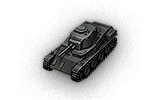
Penetration (mm)
EU  AP 64 /
AP 64 /  AP 80 /
AP 80 /  HE 20 → RU
HE 20 → RU  AP 64 /
AP 64 /  AP 90 /
AP 90 /  HE 20
HE 20
Firepower
DPM (HP/min) EU 704.03  RU 1 005.75
RU 1 005.75
Rate of fire (rounds/min) EU 15.65 RU 22.35
Reload time (s) EU 3.84 RU 2.68
Gun handling
Aim time (s) EU 2.01 RU 1.63
Dispersion (m/100 m) EU 0.41 RU 0.38
Dispersion · damaged EU 0.82 RU 0.77
Dispersion · moving EU 0.30 RU 0.24
Dispersion · tank traverse EU 0.30 RU 0.24
Dispersion · turret traverse EU 0.14 RU 0.10
Dispersion · firing EU 4 RU 2
Armor & health
Health EU 410 RU 460
Track repair time (s) EU 10.03 RU 4
Miscellaneous
View range (m) EU 270 RU 300
Großtraktor - Krupp · Tier III
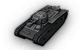
Gun handling
Aim time (s) EU 2.11 RU 1.73
Dispersion (m/100 m) EU 0.53 RU 0.43
Dispersion · damaged EU 1.05 RU 0.86
Dispersion · turret traverse EU 0.16 RU 0.10
Dispersion · firing EU 4 RU 3
Mobility
Reverse speed (km/h) EU 12 RU 15
Armor & health
Track repair time (s) EU 12.03 RU 4
Marder II · Tier III
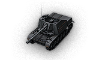
Gun handling
Aim time (s) EU 2.40 RU 1.53
Dispersion · moving EU 0.30 RU 0.24
Dispersion · tank traverse EU 0.30 RU 0.24
Dispersion · turret traverse EU 0.18 RU 0.10
Dispersion · firing EU 4 RU 2
Mobility
Reverse speed (km/h) EU 12 RU 16
Armor & health
Health EU 295 RU 500
Track repair time (s) EU 10.03 RU 4
Pz.Kpfw. 38 (t) · Tier III
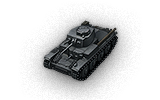
Armor & health
Health EU 445 RU 450
Track repair time (s) EU 12.03 RU 4
Pz.Kpfw. I Ausf. C · Tier III
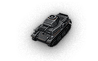
Penetration (mm)
EU  AP 33 /
AP 33 /  APCR 43 → RU
APCR 43 → RU  AP 42 /
AP 42 /  APCR 60
APCR 60
Firepower
Max range (m) EU 400 RU 450
Gun handling
Aim time (s) EU 1.40 RU 1
Armor & health
Health EU 410 RU 450
Track repair time (s) EU 10.03 RU 4
Pz.Kpfw. II Ausf. G · Tier III
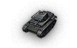
Firepower
DPM (HP/min) EU 890.72  RU 841.56
RU 841.56
Rate of fire (rounds/min) EU 29.69 RU 28.05
Reload time (s) EU 15 RU 12
Clip size EU 8 RU 6
Clip damage · damage EU 240 RU 180
Clip damage · time (s) EU 1.17 RU 0.83
Ammo capacity EU 320 RU 318
Potential damage EU 9 600 RU 9 540
Gun handling
Aim time (s) EU 2.30 RU 1.60
Dispersion · turret traverse EU 0.20 RU 0.12
Dispersion · firing EU 3 RU 1.40
Mobility
Forward speed on hard terrain (km/h) EU 65 RU 61.42
Forward speed on medium terrain (km/h) EU 65 RU 56.30
Forward speed on soft terrain (km/h) EU 33.96 RU 29.37
Engine power (hp) EU 220 RU 190.31
Power/weight (hp/t) EU 20.52 RU 17.75
Tank traverse (°/s) EU 57.36 RU 45.89
Tank traverse on hard terrain (°/s) EU 58.99 RU 51.68
Tank traverse on medium terrain (°/s) EU 54.07 RU 47.37
Tank traverse on soft terrain (°/s) EU 28.21 RU 24.72
Armor & health
Health EU 430 RU 460
Track repair time (s) EU 10.03 RU 4
Pz.Kpfw. II Ausf. J · Tier III
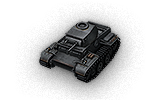
Armor & health
Health EU 465 RU 470
Track repair time (s) EU 12.03 RU 4
Pz.Kpfw. III Ausf. E · Tier III
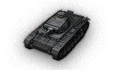
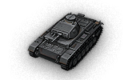
Gun handling
Aim time (s) EU 2.01 RU 2.21
Dispersion (m/100 m) EU 0.40 RU 0.46
Dispersion · damaged EU 0.81 RU 0.92
Dispersion · moving EU 0.26 RU 0.29
Dispersion · tank traverse EU 0.26 RU 0.29
Mobility
Forward speed on soft terrain (km/h) EU 47.48 RU 45.79
Engine power (hp) EU 480 RU 465.20
Weight (kg) EU 16 730 → RU 16 810
Power/weight (hp/t) EU 28.69 RU 27.67
Tank traverse (°/s) EU 57.36 RU 45.89
Tank traverse on hard terrain (°/s) EU 61.19 RU 50.83
Tank traverse on medium terrain (°/s) EU 51.78 RU 43.01
Tank traverse on soft terrain (°/s) EU 29.26 RU 24.31
Armor & health
Health EU 430 RU 460
Track repair time (s) EU 10.03 RU 4
Miscellaneous
View range (m) EU 330 RU 320
Radio range (m) EU 432.85 RU 474.56
Pz.Kpfw. IV Ausf. A · Tier III
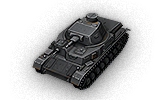
Penetration (mm) 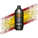
EU  AP 43 /
AP 43 /  HE 38 → RU
HE 38 → RU  AP 83 / HEAT 117 /
AP 83 / HEAT 117 /  HE 38
HE 38
Gun handling
Aim time (s) EU 1.82 RU 1.63
Dispersion (m/100 m) EU 0.48 RU 0.44
Dispersion · damaged EU 0.96 RU 0.88
Dispersion · moving EU 0.29 RU 0.24
Dispersion · tank traverse EU 0.29 RU 0.24
Armor & health
Health EU 480 RU 550
Track repair time (s) EU 10.03 RU 4
Pz.Kpfw. M 15 · Tier III
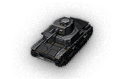
Firepower
DPM (HP/min) EU 1 043 RU 1 192
Rate of fire (rounds/min) EU 26.08 RU 29.80
Reload time (s) EU 2.30 RU 2.01
Gun handling
Aim time (s) EU 2 RU 1.60
Dispersion · turret traverse EU 0.12 RU 0.10
Dispersion · firing EU 4 RU 2
Armor & health
Track repair time (s) EU 10.03 RU 4
Pz.Kpfw. S35 739 (f) · Tier III
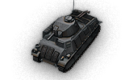
Armor & health
Health EU 465 RU 540
Track repair time (s) EU 12.03 RU 4
Pz.Kpfw. T 15 · Tier III
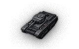
Firepower
DPM (HP/min) EU 1 095.15 RU 1 192
Rate of fire (rounds/min) EU 27.38 RU 29.80
Reload time (s) EU 2.19 RU 2.01
Gun handling
Aim time (s) EU 1.71 RU 1.60
Dispersion (m/100 m) EU 0.41 RU 0.38
Dispersion · damaged EU 0.82 RU 0.76
Dispersion · firing EU 4 RU 1.40
Armor & health
Health EU 465 RU 470
Track repair time (s) EU 10.03 RU 4
Sturmpanzer I Bison · Tier III
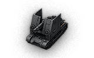
Penetration (mm)
EU  HE 35 /
HE 35 /  HE 44 /
HE 44 /  HEAT 98 → RU
HEAT 98 → RU  HE 38 /
HE 38 /  HEAT 98
HEAT 98
Damage (HP)
EU  HE 350 /
HE 350 /  HE 450 /
HE 450 /  HEAT 300 → RU
HEAT 300 → RU  HE 500 /
HE 500 /  HEAT 300
HEAT 300
Firepower
DPM (HP/min) EU 960.66 RU 1 372.37
Explosion radius EU 6.20 RU 4.70
Stun duration · maximum (s) EU 6.60 → RU —
Stun duration · minimum (s) EU 3.96 → RU —
Shell velocity (m/s) EU 275 RU 294
Max range (m) EU 605 RU 1 329.78
Potential damage EU 7 350 RU 10 500
Armor & health
Health EU 230 RU 250
Track repair time (s) EU 12.63 RU 4
Miscellaneous
View range (m) EU 245 RU 300
Shell cost EU 280 RU 310